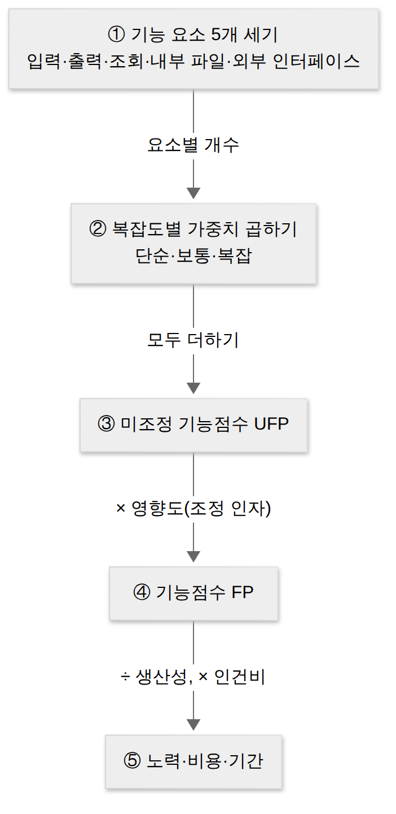

D019 · 비용산정 모델 — LOC·COCOMO·기능점수·Putnam
A5 어제 D018에서 프로젝트를 어떤 흐름(생명주기 모델)과 어떤 관점(개발 방법론)으로 진행할지 골랐어요. 틀을 골랐으면 회의실에서 바로 다음 질문이 나오죠. “그래서 몇 명이 몇 달 하면 되는데? 얼마 드는데?” 이 질문에 숫자로 답하는 일이 오늘의 세세항목 비용산정 모델이에요. A5 「소프트웨어개발 방법론 활용 > 방법론 선정」 안에 들어 있는 항목이라, 일반적인 프로젝트 관리(일정표·WBS)가 아니라 소프트웨어 규모를 재서 노력과 비용으로 바꾸는 기법에 집중해요. 오늘은 하향식·상향식이라는 두 갈래를 먼저 보고, 시험 단골인 네 모델 — LOC, COCOMO, Putnam, 기능점수(FP) — 를 각각 “무엇을 세서 무엇을 내놓는가”로 구별해요.
- 비용 산정 기법을 하향식(전문가 감정·델파이)과 상향식(LOC·단계별 인원수·수학적 산정)으로 구별할 수 있다
- COCOMO의 입력(KLOC)·출력(노력 M/M)과 세 개발 유형(조직형·반분리형·내장형), 세 산정 단계(기본형·중간형·발전형)를 구별할 수 있다
- 기능점수(FP)가 LOC와 달리 사용자 관점의 기능 요소로 규모를 재는 이유와 계산 흐름을 설명할 수 있다
- Putnam 모델(Rayleigh-Norden 곡선, 생명주기 전체의 인력 분포)의 특징을 COCOMO·FP와 구별하고, 자동화 도구 SLIM·ESTIMACS를 짝지을 수 있다
1. 큰 그림 — 비용 산정은 “규모 → 노력 → 비용”의 번역
어제 고른 틀은 “어떻게 일할지”였고, 오늘은 그 일에 “얼마가 드는지”예요. 소프트웨어 비용 산정은 개발에 필요한 인원·자원·기간을 추정해 소프트웨어의 규모를 파악하고, 그것을 비용으로 환산하는 일이에요. 소프트웨어는 공장 제품처럼 재료비를 더해서 값을 매길 수 없고, 비용의 대부분이 사람의 시간이라서 결국 “몇 명이 몇 달”이라는 노력(Effort)을 먼저 구하고 거기에 인건비를 곱하는 구조가 돼요. 노력의 단위는 M/M(Man-Month, 인월)로, 한 사람이 한 달 동안 하는 일의 양이에요. 12 M/M이면 한 명이 12개월, 또는 세 명이 4개월 하는 양이에요(실제로 사람을 늘리면 그렇게 깔끔하게 줄지 않는다는 건 뒤의 COCOMO에서 나와요).
산정이 왜 중요하냐면, 어느 쪽으로 틀려도 곤란하기 때문이에요. 과대 산정하면 예산이 낭비되고 사업 자체가 승인되지 않거나 경쟁 입찰에서 져요. 과소 산정하면 일정이 밀리고, 인력을 급히 투입하거나 테스트를 줄이게 돼서 품질이 떨어져요. 비용을 너무 높게 잡으면 기획서가 결재 문턱에서 돌아오고, 너무 낮게 잡으면 그 차액을 개발자의 주말이 메워요. 비용 산정은 그 주말을 지키는 기술이에요.
비용을 좌우하는 결정 요소는 시험에서 세 묶음으로 나와요. 프로젝트 요소는 만들 소프트웨어 자체의 성질 — 문제의 복잡도, 시스템의 크기, 요구되는 신뢰도예요. 자원 요소는 투입할 수 있는 것 — 인적 자원(개발자), 하드웨어 자원, 소프트웨어 자원(도구·라이브러리)이에요. 생산성 요소는 같은 일을 얼마나 빨리 하느냐 — 개발자의 능력과 경험, 그리고 주어진 개발 기간이에요. 기간이 생산성 요소에 들어가는 이유는, 기간을 무리하게 줄이면 같은 일에도 더 많은 노력이 들기 때문이에요(Putnam에서 다시 나와요). 한 장 요약은 아래와 같아요.
이제 기법 전체를 한 장에 놓아 볼게요. 크게 두 방향이 있어요. 하향식(Top-down)은 전체 규모를 먼저 어림잡고 나중에 세부로 나누는 방식이고, 상향식(Bottom-up)은 세부 작업을 하나씩 산정한 뒤 합쳐서 전체를 구하는 방식이에요. 상향식 안에는 줄 수를 세는 LOC, 단계별로 사람을 세는 방식, 그리고 경험식을 쓰는 수학적 산정 기법(COCOMO·Putnam·FP)이 있어요. 교재에 따라 수학적 산정 기법을 별도 묶음으로 떼어 “하향식·상향식·수학적 모델” 셋으로 나누기도 하는데, 시험에서 갈리는 건 묶음 이름보다 각 모델의 특징이라 아래 그림 한 장으로 위치를 기억하면 충분해요.
2. 하향식 — 경험 많은 사람에게 묻기
그림의 왼쪽부터 볼게요. 데이터가 하나도 없는 프로젝트 초기에 가장 먼저 할 수 있는 일은 비슷한 일을 해 본 사람에게 묻는 거예요. 하향식 산정은 과거 경험을 가진 전문가의 판단으로 전체 비용을 먼저 추정하고, 필요하면 그것을 세부 작업으로 나눠 배분하는 방식이에요. 빠르고 시스템 전체 수준의 요소(통합·문서화·관리 비용 등)를 놓치지 않는다는 장점이 있지만, 세부 작업을 하나하나 따지지 않으니 기술적으로 어려운 부분을 과소평가하기 쉬워요.
전문가 감정 기법은 조직 안에서 경험이 많은 두 명 이상의 전문가에게 비용 산정을 의뢰하는 방식이에요. 가장 편리하고 빠르지만, 전문가 개인의 경험과 직관에 기대기 때문에 주관적이고, 새로운 유형의 프로젝트에서는 그 경험이 오히려 틀린 방향으로 이끌 수 있어요. 또 왜 그 숫자가 나왔는지 설명하기 어려워서 결재권자를 설득하기도 어려워요.
델파이(Delphi) 기법은 전문가 감정의 편향을 줄이려고 나온 방식이에요. 한 명의 조정자(coordinator)와 여러 명의 전문가로 구성되고, 전문가들은 서로 얼굴을 맞대지 않고 익명으로 추정치를 내요. 조정자가 결과를 모아 요약해 돌려주면 전문가들이 그걸 보고 다시 추정하고, 이 과정을 의견이 어느 정도 모일 때까지 반복해요. 델파이 기법이 익명으로 의견을 모으는 이유는 단순해요. 회의실에서 가장 높은 사람이 먼저 “석 달이면 되지?”라고 말하는 순간, 나머지 전문가의 추정치가 신기하게도 석 달로 수렴하거든요. 현업의 플래닝 포커(카드를 동시에 뒤집어 추정치를 내는 애자일 기법)도 같은 문제를 같은 원리로 푸는 친척이에요.
3. 상향식 — 쪼개서 세고 합치기 (LOC·단계별 인원수)
하향식의 약점은 “왜 그 숫자인지” 근거가 약하다는 점이었어요. 그래서 반대 방향으로, 일을 잘게 쪼개 하나씩 세어 보고 합치는 상향식 산정이 나왔어요. 세부 작업 단위로 산정하니 근거가 분명하고 정밀하지만, 쪼개는 과정에서 통합·관리 같은 시스템 전체 비용을 빠뜨리기 쉽고, 작업 분해가 끝나야 산정할 수 있어서 시간이 걸려요.
LOC(Line Of Code) 기법
LOC 기법은 소프트웨어의 각 기능을 구현하는 데 필요한 원시 코드 라인 수를 추정해 비용을 구하는 방식이에요. 코드를 실제로 쓰기 전에 줄 수를 정확히 알 수는 없으니, 각 기능마다 세 개의 값을 추정해요 — 가장 잘 풀릴 때의 낙관치, 가장 그럴듯한 기대치(중간치), 가장 꼬일 때의 비관치. 이 셋으로 예측치 = (낙관치 + 4 × 기대치 + 비관치) ÷ 6을 구해요. 기대치에 4배 가중치를 주는 이유는, 가장 그럴듯한 값이 현실에 가장 가깝다고 보고 극단값의 영향을 줄이기 위해서예요(일정 관리의 PERT가 쓰는 3점 추정과 같은 꼴이라 함정 선지로 자주 엮여요).
줄 수를 구했으면 나머지는 단위 변환이에요. 한 사람이 한 달에 짤 수 있는 줄 수(생산성)로 나누면 “사람 × 달”, 즉 노력이 나와요. 노력에 한 사람의 한 달 인건비를 곱하면 개발 비용이, 노력을 투입 인원으로 나누면 개발 기간이 나와요. 네 공식은 외우기보다 단위로 유도하는 게 편해요.
| 구하는 것 | 공식 (단위로 따라가기) |
|---|---|
| 노력(M/M) | LOC ÷ 1인당 월평균 생산 줄 수 — “줄 ÷ (줄/사람·달) = 사람·달” |
| 개발 비용 | 노력(M/M) × 1인당 월 평균 인건비 |
| 개발 기간 | 노력(M/M) ÷ 투입 인원 — “사람·달 ÷ 사람 = 달” |
| 생산성 | LOC ÷ 노력(M/M) — 한 사람이 한 달에 짠 줄 수 |
직접 한 번 계산해 볼게요. 어떤 기능의 줄 수를 낙관 30,000줄, 기대 36,000줄, 비관 42,000줄로 추정했다면 예측치는 (30,000 + 4 × 36,000 + 42,000) ÷ 6 = 216,000 ÷ 6 = 36,000줄이에요. 개발자 한 명이 한 달에 평균 300줄을 짠다면 노력은 36,000 ÷ 300 = 120 M/M, 6명을 투입하면 기간은 120 ÷ 6 = 20개월, 1인당 월 인건비가 500만 원이면 비용은 120 × 500만 = 6억 원이에요. 시험의 계산 문제는 거의 이 네 줄의 변형이에요.
LOC 기법의 약점은 현업이 먼저 알아요. 같은 기능을 한 사람은 30줄, 다른 사람은 300줄로 짜는데, 이 기법으로 재면 300줄 쪽이 열 배 일한 사람이 돼요. 줄 수는 언어와 개발자 스타일에 따라 크게 달라지고, 무엇보다 설계 초기에는 줄 수를 추정할 근거 자체가 부족해요. 이 약점이 6장의 기능점수가 태어난 이유예요. 그래도 측정이 쉽고 직관적이라 지금도 COCOMO 같은 수학적 모델의 입력값으로 쓰여요.
개발 단계별 인원수(Effort Per Task) 기법
LOC 기법은 전체 줄 수로 노력을 한 번에 구하지만, 실제로는 분석·설계·구현·테스트 단계마다 필요한 사람과 숙련도가 달라요. 개발 단계별 인원수 기법은 LOC 기법을 보완한 방식으로, 생명주기의 각 단계별로 노력(M/M)을 산정해서 합쳐요. 단계마다 따로 계산하니 LOC 기법보다 정밀하지만, 그만큼 단계별 과거 자료가 있어야 해요. 어제 배운 생명주기 모델이 여기서 “단계를 나누는 기준”으로 다시 쓰여요.
4. COCOMO — 줄 수를 넣으면 노력이 나오는 경험식
LOC 기법은 “한 사람이 한 달에 300줄”처럼 생산성을 고정된 숫자로 봤어요. 그런데 현실에서는 프로젝트가 커질수록 한 사람당 생산성이 떨어져요. 사람이 많아지면 소통·조율에 쓰는 시간이 늘기 때문이죠. COCOMO(COnstructive COst MOdel)는 보헴(Boehm)이 1981년에 수많은 실제 프로젝트 자료를 분석해 만든 모델로, LOC(정확히는 천 줄 단위 KLOC·KDSI)를 입력받아 노력(M/M)을 출력하는 경험식이에요. 어제 나선형 모델을 제안한 그 보헴이에요. 비용 산정 결과를 프로젝트 유형별로 다르게 계산해 주고, 결과가 노력(M/M)으로 나온다는 점이 시험 단골이에요.
기본형의 노력 공식은 노력(M/M) = a × (KLOC)b이고, 기간은 c × (노력)d로 구해요. 핵심은 지수 b가 1보다 크다는 점이에요. 규모가 두 배가 되면 노력은 두 배보다 더 늘어나요. 지수 b가 1보다 큰 건, 사람이 두 배가 되면 회의 초대도 두 배 이상이 된다는 걸 수식으로 인정한 거예요. 그래서 같은 36 KLOC라도 유형에 따라 노력이 크게 달라져요 — 조직형 약 103 M/M, 반분리형 약 166 M/M, 내장형 약 265 M/M(기본형 계수로 계산). 시험에서 계수 숫자를 묻는 일은 드물지만, “유형이 엄격할수록 a·b가 커진다”는 방향은 알아 두세요.
세 가지 개발 유형
COCOMO는 프로젝트를 규모와 제약의 정도에 따라 세 유형으로 나눠요. 조직형(Organic Mode)은 기관 내부에서 개발하는 중소 규모의 소프트웨어로, 팀이 업무를 잘 알고 제약이 적어요. 사무 처리용, 업무용, 과학용 응용 프로그램이 예이고, 수험서에서는 5만(50 KDSI) 라인 이하로 외워요. 반분리형(Semi-detached Mode)은 조직형과 내장형의 중간으로, 경험과 제약이 중간 수준이에요. 컴파일러·인터프리터 같은 유틸리티, DBMS 등이 예이고 30만(300 KDSI) 라인 이하로 외워요. 내장형(Embedded Mode)은 하드웨어·실시간 처리 같은 강한 제약 안에서 돌아가는 초대형 소프트웨어로, 신호기 제어, 미사일 유도, 실시간 처리 시스템이 예이고 30만 라인 이상으로 외워요. 내장형은 “미사일 유도 소프트웨어를 새벽 배포로 핫픽스할 수는 없다”는 세계예요. 하드웨어·실시간 제약이 빡빡할수록 같은 줄 수에도 검증할 것이 늘어 노력이 훨씬 많이 들어요.
원래 보헴의 구분 기준은 줄 수보다 팀의 경험, 요구·인터페이스 제약의 엄격함이었어요. 그래서 시험 문제도 줄 수보다는 “실시간·하드웨어 제약 → 내장형”, “업무용·중소 규모 → 조직형”처럼 상황 단서로 많이 나와요. 아래 그림은 가로를 규모, 세로를 제약 강도로 놓고 세 유형을 배치한 거예요.
한 장 요약 — 세 유형의 기본형 계수와 특징이에요.
| 유형 | 규모·특징 | 기본형 노력 공식 |
|---|---|---|
| 조직형(Organic) | 중소 규모(5만 라인 이하), 업무·사무·과학용, 경험 많고 제약 적음 | 2.4 × KLOC1.05 |
| 반분리형(Semi-detached) | 중간 규모(30만 라인 이하), 컴파일러·인터프리터·DBMS 같은 유틸리티 | 3.0 × KLOC1.12 |
| 내장형(Embedded) | 초대형(30만 라인 이상), 하드웨어·실시간 제약이 강한 제어 시스템 | 3.6 × KLOC1.20 |
세 가지 산정 단계(종류)
유형과 별개로, COCOMO는 얼마나 자세히 계산하느냐에 따라 세 단계로 나뉘어요. 기본형(Basic)은 소프트웨어의 크기(KLOC)와 개발 유형만으로 노력을 구해요. 빠르지만 거칠죠. 중간형(Intermediate)은 기본형에 15개의 비용 드라이버(cost driver)를 곱해 보정해요. 비용 드라이버는 네 가지 특성으로 묶이는데, 제품 특성(요구 신뢰도, DB 크기, 복잡도), 컴퓨터(하드웨어) 특성(실행 시간·기억 장치 제약 등), 개발요원(인력) 특성(분석가·프로그래머 능력, 경험), 프로젝트 특성(도구 사용, 개발 일정 등)이에요. 발전형(Detailed)은 중간형을 한 단계 더 쪼개서, 비용 드라이버의 영향을 개발 공정(단계)별로 따로 반영해요. 가장 정밀하지만 그만큼 자료가 많이 필요해서, 주로 설계가 진행된 프로젝트 후반에 적용해요.
참고로 COCOMO II는 2000년에 나온 개정판으로, 재사용·객체지향·나선형 같은 현대 개발 방식을 반영했어요. 발전형과 이름이 비슷한 자리에서 나오지만 서로 다른 것이고, 필기 시험에서는 이름만 알아 두면 돼요. 시험에서 “COCOMO의 종류”라고 하면 기본형·중간형·발전형, “COCOMO의 유형(모드)”이라고 하면 조직형·반분리형·내장형이에요. 출제자는 이 두 목록을 한 문제의 선지에 섞어 넣는 걸 좋아해요.
| 단계(종류) | 무엇으로 계산하나 |
|---|---|
| 기본형(Basic) | 크기(KLOC)와 개발 유형만 |
| 중간형(Intermediate) | 기본형 × 15개 비용 드라이버(제품·컴퓨터·개발요원·프로젝트 특성) |
| 발전형(Detailed) | 중간형의 보정을 개발 공정(단계)별로 적용, 후반부에 사용 |
5. Putnam — 노력이 시간에 따라 어떻게 퍼지는가
COCOMO는 “전체 노력이 얼마인가”라는 하나의 숫자를 줘요. 그런데 관리자에게는 “그 노력을 언제 얼마나 투입해야 하나”도 중요해요. 처음부터 끝까지 같은 인원이 붙는 프로젝트는 없으니까요. Putnam 모델은 푸트남(Putnam)이 제안한 모델로, 소프트웨어 생명주기 전 과정에 걸쳐 사용될 노력(인력)의 분포를 예측해요. 분포 모양으로 Rayleigh-Norden(레일리-노든) 곡선을 쓰는데, 노든(Norden)이 연구 개발 프로젝트의 인력 투입 패턴이 레일리 분포를 따른다는 걸 관찰했고, 푸트남이 이를 소프트웨어에 적용했어요. 주로 대형 프로젝트의 노력 분포 산정에 쓰여요.
Rayleigh-Norden 곡선은 프로젝트 인력의 일생을 그린 그래프예요. 킥오프 때 몇 명으로 시작해 설계·구현 때 사람이 가장 많아지고, 오픈 뒤엔 “운영 담당 두 분”만 남는 그 익숙한 모양이요. 곡선 아래 넓이가 전체 노력이에요.
Putnam 모델의 또 하나의 특징은 개발 기간과 노력의 맞교환이에요. 푸트남의 소프트웨어 방정식에서는 같은 규모의 소프트웨어를 만들 때 개발 기간을 늘리면 필요한 노력이 줄고, 반대로 기간을 줄이면 노력이 급격히(원래 식에서는 기간의 네제곱에 반비례할 만큼) 늘어나요. 1장에서 “개발 기간”이 생산성 요소에 들어간 이유가 이거예요. 일정을 반으로 줄이면 사람을 두 배 넣으면 될 것 같지만, 이 모델은 그보다 훨씬 많이 든다고 경고해요. Putnam 모델을 기초로 만든 자동화 추정 도구가 SLIM이에요. COCOMO가 “얼마나”를 주는 계산기라면, Putnam은 “언제 얼마나”를 그려 주는 인력 계획표라고 보면 둘이 섞이지 않아요.
6. 기능점수(FP) — 줄 수 대신 기능을 센다
여기까지의 LOC·COCOMO는 모두 줄 수에서 출발했어요. 그런데 3장에서 본 약점이 그대로 남아요. 줄 수는 언어마다 다르고, 코드가 나오기 전인 계획·분석 단계에서는 추정할 근거가 약해요. 기능점수(Function Point, FP) 모델은 알브레히트(Albrecht)가 1979년 IBM에서 제안한 방식으로, 소프트웨어가 사용자에게 제공하는 기능의 양으로 규모를 재요. 기능점수는 “코드가 몇 줄이냐” 대신 “사용자가 누를 수 있는 게 몇 개냐”를 세요. 사용자는 우리 코드가 몇 줄인지 관심 없고, 버튼이 동작하는지만 궁금하니까요. 기능은 요구사항 단계에서 이미 보이니 초기에 산정할 수 있고, 언어와 무관해서 서로 다른 언어로 만든 시스템도 비교할 수 있어요. 대신 기능을 세는 규칙을 익혀야 하고 세는 사람에 따라 차이가 생길 수 있어요.
세는 대상인 기능 증대 요인(기능 요소)은 다섯 가지예요. 국내 수험서는 자료 입력(입력 양식), 정보 출력(출력 보고서), 명령어(사용자 질의), 데이터 파일, 필요한 외부 루틴과의 인터페이스로 적고, 국제 표준(IFPUG)은 같은 다섯을 아래처럼 불러요. 앞의 셋(입력·출력·조회)은 데이터가 경계를 넘나드는 트랜잭션이고, 뒤의 둘(내부 파일·외부 인터페이스 파일)은 보관되는 데이터 덩어리예요. 쇼핑몰로 치면 회원가입 화면이 입력, 주문 내역서 출력이 출력, 상품 검색이 조회, 회원 테이블이 내부 논리 파일, 결제사에서 읽어 오는 카드사 코드표가 외부 인터페이스 파일이에요.
| 국내 수험서 표기 | IFPUG 표기 | 무엇을 세나 |
|---|---|---|
| 자료 입력(입력 양식) | EI 외부 입력 | 사용자·외부에서 들어와 내부 데이터를 바꾸는 처리 |
| 정보 출력(출력 보고서) | EO 외부 출력 | 계산·가공을 거쳐 밖으로 나가는 보고서·결과 |
| 명령어(사용자 질의) | EQ 외부 조회 | 가공 없이 꺼내 보여 주는 조회 |
| 데이터 파일 | ILF 내부 논리 파일 | 시스템이 직접 관리·저장하는 데이터 |
| 외부 루틴 인터페이스 | EIF 외부 인터페이스 파일 | 다른 시스템이 관리하고 우리는 참조만 하는 데이터 |
계산은 세 걸음이에요. 먼저 다섯 요소의 개수를 세고, 각각을 복잡도(단순·보통·복잡)에 따라 정해진 가중치를 곱해 모두 더하면 미조정 기능점수(UFP)가 나와요. 여기에 시스템 전체의 특성(성능 요구, 분산 처리, 온라인 갱신 등 14개 일반 특성을 0~5점으로 평가한 값)으로 만든 영향도(조정 인자)를 곱하면 최종 기능점수(FP)가 돼요. 이 FP를 조직의 생산성(1 M/M당 처리하는 FP)으로 나누면 노력이, 거기에 인건비를 곱하면 비용이 나와요. 즉 “총 기능점수 = 기능 요소별 가중치 합 × 영향도”예요. FP 기반의 자동화 추정 도구가 ESTIMACS예요. 국내 공공 SW 사업 대가 산정에서도 기능점수 방식을 쓰고 있어서, 공공 프로젝트 제안서를 써 본 적이 있다면 이미 만나 봤을 수도 있어요.

위 흐름에서 줄 수는 한 번도 나오지 않아요. 이게 FP와 LOC·COCOMO를 가르는 가장 확실한 단서예요. 문제에 “가중치”, “기능 증대 요인”, “입력·출력·질의·파일·인터페이스”가 보이면 FP예요.
7. 네 모델 비교 — 무엇을 세서 무엇을 내놓나
네 모델을 따로 봤으니 이제 나란히 놓을게요. 구별의 열쇠는 늘 같아요 — 제안자, 입력(무엇을 세나), 출력(무엇을 알려 주나). 한 장 요약은 아래와 같아요.
| 모델 | 무엇을 세서 무엇을 내놓나 | 키워드·도구 |
|---|---|---|
| LOC 기법 | 기능별 줄 수(낙관·기대·비관 3점 추정) → 노력·비용·기간·생산성 | (낙관 + 4×기대 + 비관) ÷ 6, 상향식의 기본 |
| COCOMO | KLOC → 노력(M/M), 규모가 클수록 노력이 더 빨리 증가(지수 b > 1) | 보헴, 조직형·반분리형·내장형, 기본형·중간형·발전형 |
| Putnam | 규모·기간 → 생명주기 전체의 노력(인력) 분포 | 푸트남, Rayleigh-Norden 곡선, 대형 프로젝트, SLIM |
| 기능점수(FP) | 기능 요소 5개 × 가중치 × 영향도 → FP → 노력·비용 | 알브레히트, 언어 무관·초기 산정, ESTIMACS |
함정 하나를 더 짚어요. 일정 관리 도구인 PERT·CPM·간트 차트는 “얼마나 걸리나”를 다루다 보니 비용 산정 기법처럼 보이지만, 작업 순서와 일정을 관리하는 일정 계획 기법이에요. 출제자는 “비용 추정 모형이 아닌 것”에 PERT를 끼워 넣어요. PERT도 3점 추정을 쓰고 일정 이야기를 하니 같은 편처럼 보이길 바라면서요. 내일 D020에서는 이렇게 고른 방법론과 산정한 비용을 실제 프로젝트에 맞게 다듬는 테일러링과 개발 프레임워크를 봐요.
8. 시험 포인트·암기 단서
오늘 내용은 거의 “설명 주고 모델 이름 고르기”로 나와요. 설명 속의 단서 단어 하나만 잡으면 되도록 짝을 정리해요.
9. 오답 복습 — UML 관계선과 결합도 방향
오늘은 두 오답을 다시 보는 날이에요. 비용 산정 모델은 “설명 속 단서 단어 하나로 이름을 고르는” 문제였는데, 아래 두 오답도 같은 성격이에요 — 모양이나 방향 같은 작은 단서 하나가 정답을 가르죠. 출제자 입장에서는 선 하나를 점선으로 바꾸거나 화살표 방향만 뒤집는 게 새 문제를 쓰는 것보다 훨씬 싸게 먹히는 비용 절감 기법이에요.
D009-3 · 일반화와 실체화의 선 모양. UML 클래스 다이어그램에서 속이 빈 삼각형 화살표는 두 관계가 같이 써요. 차이는 선이에요. 일반화(Generalization)는 실선 + 빈 삼각형으로, 자식 클래스가 부모 클래스를 상속하는 is-a 관계예요(Java의 extends). 실체화(Realization)는 점선 + 빈 삼각형으로, 클래스가 인터페이스에 약속된 기능을 실제로 구현하는 관계예요(Java의 implements). 점선은 “아직 실체가 없는 약속을 구현한다”는 느낌으로 기억하면 편해요. 같은 점선이라도 화살촉이 열린 화살표면 잠깐 가져다 쓰는 의존이고, 아무 장식 없는 실선은 연관이에요. 일주일 전에는 실선을 보고 실체화를 골랐다가 재시작 문제에서 통과했으니, 오늘은 반대로 점선 쪽을 물어요(D009·D013 다시 보기).
D016-6 · 결합도 순서의 방향. 결합도는 모듈 사이가 얼마나 얽혔나를 재는 잣대라 약할수록 좋아요. 좋은 쪽(약한 쪽)부터 외운 “자스제외공내”가 약 → 강 — 자료 → 스탬프 → 제어 → 외부 → 공통 → 내용이고, 강 → 약은 이걸 그대로 뒤집은 “내공외제스자”예요. 어제 D018 6번은 약 → 강을 물었으니, 오늘은 다시 원래 문제처럼 강 → 약을 물어요. 이번엔 정답의 역순만 함정이 아니라, 가운데 두 개의 자리를 바꾼 선지도 섞여 있어요. 선지를 보기 전에 문제의 방향 단어에 먼저 동그라미를 치고, 그다음 “외부가 공통보다 약하다(외부는 외부 데이터 하나, 공통은 전역 데이터 전체를 공유)”를 떠올리면 가운데 두 칸도 흔들리지 않아요(D012 다시 보기).
확인 문제 (채점 완료 · 4/4)
- COCOMO 모형에서, 신호 제어·미사일 유도처럼 하드웨어와 실시간 처리 제약이 엄격한 대규모 소프트웨어를 개발하는 유형은?
정답·해설
③ 내장형(Embedded). 하드웨어·실시간 제약이 강한 초대형(30만 라인 이상) 시스템이에요. 조직형은 중소 규모 업무용, 반분리형은 중간 규모 유틸리티, 발전형은 개발 유형이 아니라 COCOMO의 산정 단계예요. - 소프트웨어 생명주기 전 과정에 걸친 노력(인력)의 분포를 Rayleigh-Norden 곡선으로 예측하며, 자동화 도구 SLIM의 기초가 된 비용 산정 모형은?
정답·해설
① Putnam 모형. 생명주기 전체의 노력 분포 + Rayleigh-Norden 곡선 + SLIM이 단서예요. COCOMO는 LOC 기반(보헴), FP는 기능 요소 가중치(알브레히트, ESTIMACS)예요. - (오답 재확인) UML 클래스 다이어그램에서 인터페이스와 그 인터페이스를 구현하는 클래스 사이를 점선과 속이 빈 삼각형 화살표로 나타내는 관계는?
정답·해설 (D009-3 재확인 통과)
② 실체화. 점선 + 빈 삼각형 = 인터페이스 구현이에요. 실선 + 빈 삼각형이면 일반화(상속)예요. - (오답 재확인) 결합도를 강한 것부터 약한 것 순서로 바르게 나열한 것은?
정답·해설 (D016-6 추가 확인 통과)
④ 내용 → 공통 → 외부 → 제어 → 스탬프 → 자료. ①은 방향을 뒤집은 것, ②③은 가운데 순서를 바꾼 함정이에요.
고른 뒤 답안 복사 → 디스코드 공부 채널에 붙여넣기 하면 돼요.
답장: 정처기 D019: 1)번호 2)번호 3)번호 4)번호